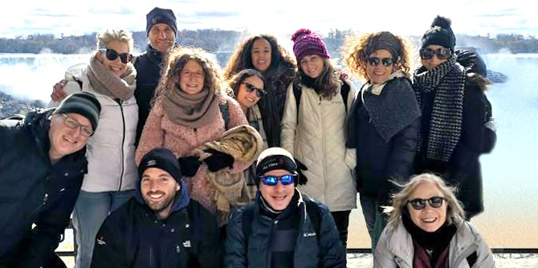

In early November, a group of graduates of the Mandel Regional Leadership Program in Eilat-Eilot traveled to Toronto for a week-long study mission at the invitation of the UJA Federation of Greater Toronto, which has been active in Eilat and Eilot for many years. The trip aimed to familiarize the graduates with the Jewish community and Jewish life in Toronto, as well as to create channels for ongoing communication about ideas for collaborative projects.
The study mission exposed the graduates to examples of world-wide applications of topics that they had studied during their program at the Mandel Center for Leadership in the Negev. It included meetings with members from all different facets of the community, familiarization with institutions from different streams of Judaism, and learning about the city of Toronto, with an emphasis on subjects studied during the program, such as community building, urban renewal, and culture and art as generators of identity.
The sessions were instructive, inspiring, and interesting, and laid the foundation for an ongoing relationship with the Federation via a leadership group that is currently being established.
The graduates returned to Israel with questions about Jewish identity abroad and about the possibility of making connections between Jewish-Israeli identity and Jewish identity in the Diaspora. A number of ideas emerged for continued contact and collaborations with parallel leadership groups and with professionals in similar fields in Toronto.
The graduates of the Mandel Program for Regional Leadership in Eilat-Eilot are involved in various areas of activity in Israel, including local government, culture, tourism, community, and education and the environment, and work intensively to advance measures that will improve the quality of life in the region.

{kind=link}